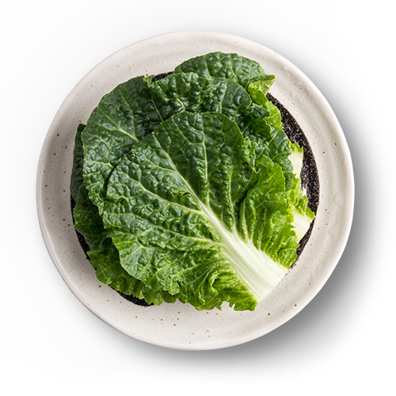

20여가지의 쌈
쌈채소에는 비타민과 무기질 등 건강을 위한 영양소가 가득합니다.
원조쌈밥집에서는 신선한 채소에서부터 살짝 데쳐서 더욱 부드러운 숙쌈에 이르기까지
약 20여 가지의 쌈채소를 제공하고 있습니다.
다양한 쌈채소의 이름이 무엇인지, 어떤 효능이 있는지 확인하여 보세요.
-
상추
철분과 필수 아미노산이 풍부하여
빈혈에 도움을 주며, 진통과 최면 효과가 있습니다. -
깻잎
독특한 향이 입맛을 돋구어 주며
철분,비타민,칼슘 등이 풍부해
노화와 감기예방에 효과가 있습니다. -
적상추
기분이 좋아지는 안정제 역할을 하고
두통이나 불면증 해소에 좋은 효과를 냅니다. -
청겨자
베타카로틴,칼슘,철분 등의
함유량이 높아 류머티즘,신경통,폐렴 증상 완화에
도움을 줍니다. -
청경채
단맛이 나는 채소로 피부미용,치아,골격의 발육에 좋고
신진대사 기능 촉진 및 세포조직 강화합니다.
-

쌈배추
폐암의 예방과 치료에 효과적이며,
철분 및 아스코르브산 함량이 높아 동맥경화 및 성인병을 예방합니다. -
적치커리
담즙을 증가시키는 작용이 있다고 하여
담석증의 특효약으로 이용하며 소화기능을 개선 합니다. -
신선초
약초로 많이 이용하며 비타민,철분,인,칼슘 등이
다량 함유되어있어 빈혈,고혈압 등에 효과가 있습니다. -
배추
배추에 들어있는 인은 발암물질이
활성화 되는 것을 억제해 암 예방 효과가 있습니다. -
치커리
쌉싸름한 맛을 내는 인티빈 성분이 소화를 촉진하고
혈관계를 강화시켜 변비예방에 도움을 줍니다.
-
백로즈
케일과에 속하는 쌈채소로 식용을 돋우거나
장식용 채소로 사용하며 칼슘,철,베타카로틴이 풍부합니다. -
뉴그린
다양한 비타민,칼륨,칼슘,인 함유로
녹색채소 중에서도 영양가가 높으며 항암작용 및
간 피로개선에 도움이 됩니다. -
적로즈
물감을 뿌린듯한 독특한 색이 있으며
풍부한 비타민C와 칼슘으로 위궤양과 간 질환 치료에 효과적 입니다. -
샐러리
쌉싸름한 맛과 특유의 향이 있으며 불면증을 해소하고
피부 건조와 변비치료에 효과가 있습니다. -
적근대
성장기 어린이의 골격 형성 및 치아건강에
도움을 주며 염증과 독을 제거하는 효과가 있습니다. -
곰취
봄철 입맛을 돋우고 춘곤증을 예방하는데 도움을 주며
혈액순환 개선과 기침,천식에 대한 치료에 탁월한 효과가 있습니다. -
다시마
바다의 채소로 불리며 변비에 효과, 지방의 흡수를 방해하는 성분으로
콜레스테롤 수치 완화 및 다이어트에 도움을 줍니다.
-
케일
위궤양과 신경통 치료에 효과가 있으며
피를 만들어 주는 조혈작용,빈혈에 좋습니다. -
양배추
헬리코박터 파이로리의 활성을 억제함으로써
위궤양에 탁월한 효과가 있으며
피부미용에 도움을 줍니다. -
쪽파
비타민C가 풍부하여 감기예방에 효과적,
또한 저열량,저지방으로 다이어트에 도움이 됩니다. -
열무잎
여린 무에서 유래한 열무는 비타민A와 C가 풍부하여 혈액의 산성화를 방지합니다.
또한 인삼에도 들어있는 사포인 성분을 포함하고 있어
혈압을 조절하여 주는 효능이 있습니다. -
고추
특유의 매운맛으로 중독성을 가지고 있으며
지방분해에 효과가 있으며 높은 비타민C로 면역강화에 도움을 줍니다. -
적겨자
톡 쏘는 매운맛이 특징으로 비타민A가 풍부하여
눈과 귀를 밝게 하고 마음을 안정시키는 효과가 있습니다. -
당근
비타민A와 카로틴 성분으로 시력개선 효과 및
야맹증에 도움을 주며, 노화방지에 높은 효과가 있습니다.